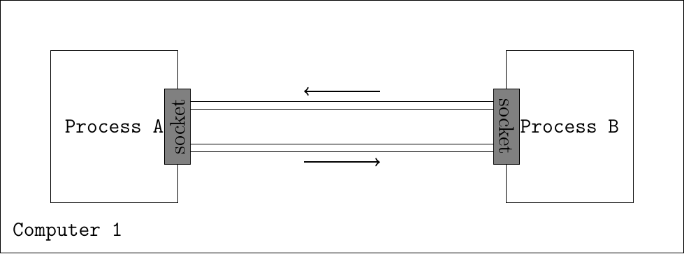
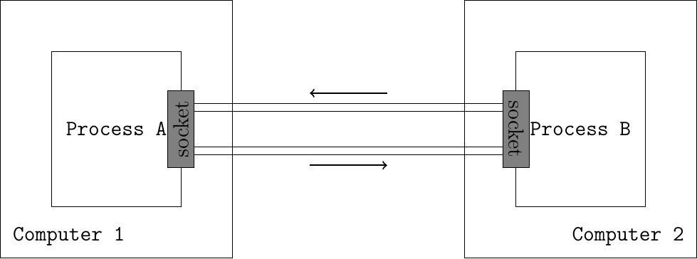

Operating systems allow to isolate different programs by executing them in separate processes. A socket is a tool provided by the operating system that allows two separated processes to communicate with each other. A socket takes the form of a file descriptor and can be seen as a communication pipe through which the communicating processes can exchange arbitrary information. In order to receive a message, a process must be attached to a specific address that the peer can use to reach it.

Fig. 1 Connecting two processes communicating on the same computer
The socket is a powerful abstraction as it allows processes to communicate even if they are located on different computers. In this specific cases, the inter-processes communication will go through a network.

Fig. 2 Connecting two processes communicating on different computers
Networked applications were usually implemented by using the socket API. This API was designed when TCP/IP was first implemented in the Unix BSD operating system,
and has served as the model for many APIs between applications and the
networking stack in an operating system. Although the socket API is very
popular, other APIs have also been developed. For example, the STREAMS
API has been added to several Unix System V variants.
The socket API is supported by most programming languages and several
textbooks have been devoted to it.
The socket API is quite low-level and should be used only when you
need a complete control of the network access. If your application
simply needs, for instance, to retrieve data from a web server, there
are much simpler and higher-level APIs such as those you used to handle during you Java lectures (remember )
A detailed discussion of the socket API is outside the scope of this section. Please look at this excellent and well-known reference the for further details.
The sequence of function calls for the client and a server participating in a TCP connection is presented below. As you can see, the sequence remains the same than during your Java lectures except some differences concerning the system calls. For instance, there is no differenciation between a server and a client socket as with .
In order to reach a peer, a process must know its address.
An address is a value that identifies a peer in a given network. We will tackle in detail IP addresses during the network layer lecture the 6th of November 2019. There
exists many different kinds of address families. For example, some of
them allow to reach a peer using the file system on the computer. Some
others allow to reach a remote peer using a network. The socket API
provides generic functions: the peer address is taken as a struct sockaddr *, which can point to any family of address. This is partly why sockets are a powerful abstraction.
The sendto system call allows to send data to a peer identified by its socket address through a given socket.
ssize_t sendto(int sockfd, const void *buf, size_t len, int flags, const struct sockaddr *dest_addr, socklen_t addrlen);
The first argument is the file descriptor of the socket that we use to perform the communication. buf is a buffer of length len containing the bytes to send to the peer. The usage of flags argument is out of the scope of this section and can be set to 0. dest_addr is the socket address of the destination to which we want to send the bytes, its length is passed using the addrlen argument.
In the following example, a C program is sending the bytes 'h', 'e', 'l', 'l' and 'o' to a remote process located at address peer_addr, using the already created socket sock.
int send_hello_to_peer(int sock, struct sockaddr *peer_addr, size_t peer_addr_len) {
ssize_t sent = sendto(sock, "hello", strlen("hello"), 0, peer_addr, peer_addr_len);
if (sent == -1) {
printf("could not send the message, error: %s\n", strerror(errno));
return errno;
}
return 0;
}
As the sendto
function is generic, this function will work correctly independently
from the fact that the peer’s address is defined as a path on the
computer filesystem or a network address.
Operating systems allow to assign an address to a socket using the bind system call. This is useful when you want to receive messages from another program to which you announced your socket address.
Once the address is assigned to the socket, the program can receive data from others using system calls such as recv and read. Note that we can use the read system call as the operating system provides a socket as a file descriptor.
The following program binds its socket to a given socket address and
then waits for receiving new bytes, using the already created socket sock.
#define MAX_MESSAGE_SIZE 2500
int bind_and_receive_from_peer(int sock, struct sockaddr *local_addr, socklen_t local_addr_len) {
int err = bind(sock, local_addr, local_addr_len); // assign our address to the socket
if (err == -1) {
printf("could not bind on the socket, error: %s\n", strerror(errno));
return errno;
}
char buffer[MAX_MESSAGE_SIZE]; // allocate a buffer of MAX_MESSAGE_SIZE bytes on the stack
ssize_t n_received = recv(sock, buffer, MAX_MESSAGE_SIZE, 0); // equivalent to do: read(sock, buffer, MAX_MESSAGE_SIZE);
if (n_received == -1) {
printf("could not receive the message, error: %s\n", strerror(errno));
return errno;
}
// let's print what we received !
printf("received %ld bytes:\n", n_received);
for (int i = 0 ; i < n_received ; i++) {
printf("0x%hhx ('%c') ", buffer[i], buffer[i]);
}
printf("\n");
return 0;
}
Using this code, the program will read and print an arbitrary message
received from an arbitrary peer who knows the program’s socket address.
If we want to know the address of the peer that sent us the message, we
can use the recvfrom system call. This is what a modified version of bind_and_receive_from_peer is doing below.
#define MAX_MESSAGE_SIZE 2500
int bind_and_receive_from_peer_with_addr(int sock) {
int err = bind(sock, local_addr, local_addr_len); // assign our address to the socket
if (err == -1) {
printf("could not bind on the socket, error: %s\n", strerror(errno));
return errno;
}
struct sockaddr_storage peer_addr; // allocate the peer's address on the stack. It will be initialized when we receive a message
socklen_t peer_addr_len = sizeof(struct sockaddr_storage); // variable that will contain the length of the peer's address
char buffer[MAX_MESSAGE_SIZE]; // allocate a buffer of MAX_MESSAGE_SIZE bytes on the stack
ssize_t n_received = recvfrom(sock, buffer, MAX_MESSAGE_SIZE, 0, (struct sockaddr *) &peer_addr, &peer_addr_len);
if (n_received == -1) {
printf("could not receive the message, error: %s\n", strerror(errno));
return errno;
}
// let's print what we received !
printf("received %ld bytes:\n", n_received);
for (int i = 0 ; i < n_received ; i++) {
printf("0x%hhx ('%c') ", buffer[i], buffer[i]);
}
printf("\n");
// let's now print the address of the peer
uint8_t *peer_addr_bytes = (uint8_t *) &peer_addr;
printf("the socket address of the peer is (%ld bytes):\n", peer_addr_len);
for (int i = 0 ; i < peer_addr_len ; i++) {
printf("0x%hhx ", peer_addr_bytes[i]);
}
printf("\n");
return 0;
}
This function is now using the recvfrom
system call that will also provide the address of the peer who sent the
message. As addresses are generic and can have different sizes, recvfrom also tells us the size of the address that it has written.
connect: connecting a socket to a remote addressOperating systems allow to link a socket to a remote address so that
every information sent through the socket will only be sent to this
remote address, and the socket will only receive messages sent by this
remote address. This can be done using the connect system call below.
int connect(int sockfd, const struct sockaddr *addr, socklen_t addrlen);
This system call will assign the socket sockfd to the addr remote socket address. The process can then use the send and write system calls that do not to specify the destination socket address.
Furthermore, the calls to recv and read will only deliver messages sent by this remote address. This is useful when we only care about the other peer messages.
The following program connects a socket to a remote address, sends a message and waits for a reply.
#define MAX_MESSAGE_SIZE 2500
int send_hello_to_and_read_reply_from_connected_peer(int sock, struct sockaddr *peer_addr, size_t peer_addr_len) {
int err = connect(sock, peer_addr, peer_addr_len); // connect the socket to the peer
if (err == -1) {
printf("cound not connect the socket: %s\n", strerror(errno));
return errno;
}
ssize_t written = write(sock, "hello", strlen("hello")); // we can use the generic write(2) system call: we do not need to specify the destination socket address
if (written == -1) {
printf("could not send the message, error: %s\n", strerror(errno));
return errno;
}
uint8_t buffer[MAX_MESSAGE_SIZE]; // allocate the receive buffer on the stack
ssize_t amount_read = read(sock, buffer, MAX_MESSAGE_SIZE);
if (amount_read == -1) {
printf("could not read on the socket, error: %s\n", strerror(errno));
return errno;
}
// let's print what we received !
printf("received %ld bytes:\n", amount_read);
for (int i = 0 ; i < amount_read ; i++) {
printf("0x%hhx ('%c') ", buffer[i], buffer[i]);
}
return 0;
}
Until now, we learned how to use sockets that were already created.
When writing a whole program, you will have to create you own sockets
and choose the concrete technology that it will use to communicate with
others. In this section, we will create new sockets and allow a program
to communicate with processes located on another computer using a
network. The most recent standardized technology used to communicate
through a network is the IPv6 network protocol enabled with AF_INET6 domain. However in this lecture we will use IPv4 protocol where hosts are identified using IPv4 addresses.
Modern operating systems allow IPv4 or IPv6 network communications between
programs to be done using the socket API, just as we did in the previous
sections.
A program can use the socket system call to create a new socket.
int socket(int domain, int type, int protocol)
The domain parameter specifies the address family that we will use to concretely perform the communication. For an IPv4 socket, the domain parameter will be set to the value AF_INET, telling the operating system that we plan to communicate using IPv4 addresses.
The type parameter specifies the communication guarantees that we need. For now, we will use the type SOCK_DGRAM which allows us to send unreliable messages. This means that each data that we send at each call of sendto will either be completely received or not received at all. The last parameter will be set to 0.
The following line creates a socket, telling the operating system that
we want to communicate using IPv4 addresses and that we want to send
unreliable messages.
int sock = socket(AF_INET, SOCK_DGRAM, 0);
Now that we created an IPv4 socket, we can use it to reach another program if we know its IPv4 address. IPv4 addresses have a human-readable format that can be represented as a string of characters. The details of IPv4 addresses are out of scope of this section and will be given, as previously said, in a next lecture but here are some examples:
The 127.0.0.1 IPv4 address identifies the computer on which the current program is running;
The 192.93.254.122 IPv4 address identifies the computer serving the https://www.isae-supaero.fr website.
An IPv4 address often identifies a computer and not a program running on the computer. In order to identify a specific program running on a specific computer, we use a port number in addition to the IPv4 address. A program using an IPv4 socket is this identified using:
The IPv4 address of the computer;
The port number identifying the program running on the computer.
A program can use the struct sockaddr_in to represent IPv4 socket addresses. The following program creates a struct sockaddr_in that identifies the program that reserved the port number 55555 on the computer identified by the 127.0.0.1 IPv4 address.
struct sockaddr_in peer_addr; // allocate the address on the stack memset(&peer_addr, 0, sizeof(peer_addr)); // fill the address with 0-bytes to avoid garbage-values peer_addr.sin_family = AF_INET; // indicate that the address is an IPv4 address peer_addr.sin_port = htons(55555); // indicate that the programm is running on port 55555 inet_pton(AF_INET, "127.0.0.1", &peer_addr.sin_addr); // indicate that the program is running on the computer identified by the 127.0.0.1 IPv4 address
Now, we have built everything we need to send a message to the remote program. The create_socket_and_send_message function below assembles all the building blocks we created until now in order to send the message "hello" to the program running on port 55555 on the computer identified by the 127.0.0.1 IPv4 address.
int create_socket_and_send_message() {
int sock = socket(AF_INET, SOCK_DGRAM, 0); // create a socket using IPv4 addresses
if (sock == -1) {
printf("could not create the IPv4 SOCK_DGRAM socket, error: %s\n", strerror(errno));
return errno;
}
struct sockaddr_in peer_addr; // allocate the address on the stack
memset(&peer_addr, 0, sizeof(peer_addr)); // fill the address with 0-bytes to avoid garbage-values
peer_addr.sin_family = AF_INET; // indicate that the address is an IPv4 address
peer_addr.sin_port = htons(55555); // indicate that the programm is running on port 55555
inet_pton(AF_INET, "::1", &peer_addr.sin_addr); // indicate that the program is running on the computer identified by the 127.0.0.1 IPv4 address
send_hello_to_peer(sock, (struct sockaddr *) &peer_addr, sizeof(peer_addr)); // use the send_hello_to_peer function that we defined previously
close(sock); // release the resources used by the socket
return 0;
}
Note that we can reuse our send_hello_to_peer
function without any modification as we wrote it to handle any kind of
sockets, including sockets using the IPv4 network protocol.